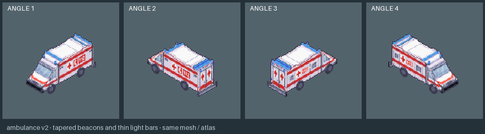
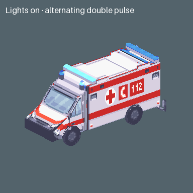
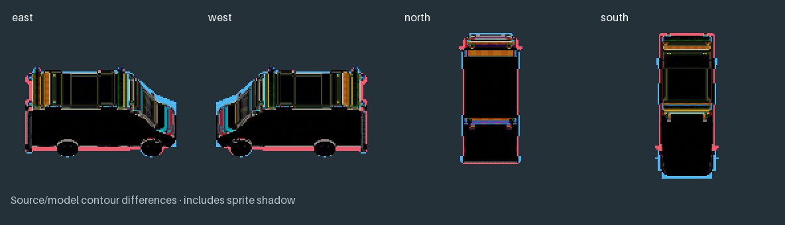

Original sprites above, matched Blender renders below. Compare the body shape, windows, wheels, blue lights and rear doors.

The roof panel paint differs between source directions. This version uses the rear-view roof pattern throughout; the cab and rear fittings still need review.


Download the model · Tilefun Workshop
Sprite source: Modern Exteriors by LimeZu. Authored diagnostic awaiting review; game integration and production art approval are pending.